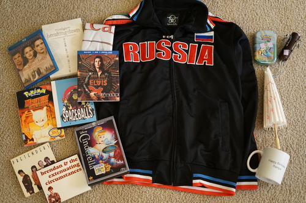
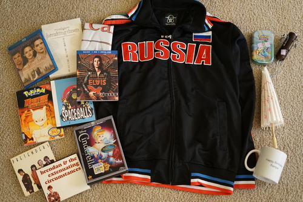

Happy devil's night!!! I will be celebrating by watching The Crow tonight! It's a tradition now :3 I'm not actually a big Halloween fan, but my coworker wore his Link cosplay to work yesterday and I'm feeling the cosplay itch now!! He looked so good and his workmanship was impressive!
I pulled out my PC98 Arisu skirt and wow I made some choices on it. Favorites details include singed top stitching from an iron too hot and the straps being held on by safety pins.
 

Yes, I bought another copy of this movie this for the tapestry. Ryan was paid a finder's fee for this one.
Ryan's. I'm pretty sure I had this book as a kid and it got severely water damaged from kid activities.
Ryan's
I watched this because uhhh just look at him. If you want to view a man in eyeliner doing barely legal wiggling, you should watch this. I would place it at my least favorite Baz Luhrmann movie though.
WHO is brendan and WHAT are his extenuating circumstances?? It's a fine CD. Not overproduced.
Ryan's
Wow I can't wait to get shot while wearing this!! Russia jackets are seriously too cool so it's not fair.
Ryan's
on closer inspection, the cherry blossoms are butterflies
for Ryan's office. a family photo is on the opposite side.
I went a little sewing nuts!! Remember how I was making an outfit for Praline? Well, I didn't want to so I started patterning a pair of pants for Cheby.

I entered the 2nd level procrastination. I made a pair of shorts and a sweater for Verona! He's ready for... California winter. The shorts are the same fabric as a pair of pants I made for him in January 2010. I didn't have enough to make him full length pants unfortunately... My patterning skills are much better now. He can sit without sharing his entire ass with the world unlike the first pair. I tried to make the sweater oversized, but I don't think it's big enough. Maybe Hina should try it on!

I returned to 1st level procrastination and made skinny jeans for Cheby. I made one (big) mistake, but it wasn't fatal. Since I can't mark with the frixion markers on black fabric, I drew the seam allowance into the pattern. I added a 1cm seam allowance and then only actually used .5cm seams. They were too big and it took me a bit to realize where I screwed up. They still look okay after taking in the outer sides. This was the first pair I used a curved waistband on. It's more effort but it does lay a lot nicer. I wanted lower rise but Cheby will have to Deal With It because I'm fresh out of larger pieces of this fabric.

I stopped by a craft fair and found the woman who makes American Girl outfits (which are very cute and well made but I don't like AG) and she has a bunch of doll beanies out again. I try chatting her up again (even though I already knew she is NOT interested in Hina similar to how I don't gaf about AG) and took a chance on her doll beanies after measuring Cheby's wigged head the night before. The hats seemed to have a 10 inch opening and his head was almost 10 inches with a wig. I ended up buying 5 total after confirming they fit. One of them is for my love, Marmie ♡

I hope you all heard that SD Elizabeth has been teased!! I'm very excited to see her more.